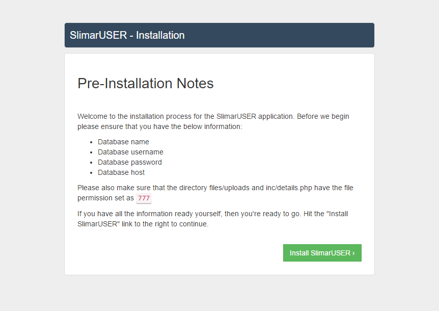

In order to successfully install and operate SlimarGame your server must meet the following requirements
For a successful setup of SlimarGame, you will need to change folder permissions.
The following will need the file permissions to be to be set as 777
Now you are ready to install SlimarGame. Firstly you will need to upload the contents of the downloaded ZIP file to a webserver that has the requirements listed above. After you have uploaded your files, you will now need to create a database. The installation wizard is very simple and easy to use.
yourdomain.com/install/. The first page will contain information about permissions that will be set. Make sure these permissions are set before continuing. Once ready, proceed by clicking "Install SlimarGame"

admin@admin.com - admin123.
Adding games into SlimarGame is simple. You have 4 choices on how to do so.
1. Upload SWF file
2. SWF file url
3. File url HTML5,
4. Embedded HTML5
You can download your very own SWF files across the internet. A quick simple search SWF game download will find you plenty. But here are some sites you can download them from:
Kongregate
NotDoppler
Miniclip
Once downloaded simply go to your administration panel, and edit a game after adding and upload the downloaded SWF.
You may also be able to use a direct link to the swf, if you upload it yourself by FTP or to a different website.
Adobe Flash is outdated, and is no longer being used on many websites. Many browsers have pulled their support, instead forcing HTML5. You will be able to find many HTML5 games and also add them to your site using SlimarGame. With the HTML File url choice, you can direct a HTML5 game page directly to your website. Or you can use an embedded script code to add the game.
SlimarGame provides two already set up login pages, and also a login in the top navigation. After login, cookies will be set for the users login. This will contain the user id, and the password. At each action throughout the site, this password and id will be checked from the database to see if it is correct, to be secure. Once logged in, the user will be redirected to the administrators chosen page. By default this will be the dashboard.php.
Users are able to create an account by going to the registeration page. This page will be signup.php. If wanting to, the administrator can choose to turn registeration off by the Administration Panel under site settings. This will disallow anyone to register.
On both the login, and registeration are opptional captchas. These can be turned off indivudually for either registeration or login by the site settings in the admin panel.
SlimarGame contains a password reset feature, to allow users to reset their password incase they forget it. The user will be able to enter their email address, and an email will be sent out. The website administrator MUST enter their email address and web host email server in the site settings in the administration panel for this to correctly function.
You can use the SlimarGame system for many different projects. You can use it as a standlone website as it stands currently, or you can use it to build a new website as a starting point, or you can integrate it into your existing website. Below you will find out how to use the features of SlimarGame to your advantage.
<?php
ob_start();
require "inc/config.php";
?>
<?php echo $i['title']; ?>
<?php echo $i['url']; ?>
<?php echo $in['username']; ?>
<?php echo $i['usergroup']; ?>
<?php echo $in_perm['name']; ?>
<?php echo $in['firstname']; ?>
<?php echo $in['country']; ?>
<?php echo $in['gender']; ?>
<?php echo $in['email']; ?>
<?php echo $in['profilepic']; ?>
<?php if($in['id']){ ?> [Show if logged in here]
<?php } ?>
<?php if(!$in['id']){ ?> [Show if not logged in here]
<?php } ?>
<?php if($in_perm['has_admin'] == "1"){ ?> [Show if admin]
<?php } ?>
<?php if($in['verified'] == "1"){ ?> [Show verified here]
<?php } ?>
<?php if($in_perm['(PERMISSION HERE)'] == "1"){ ?> [Show if permission true here]
<?php } ?>
method="post". One input with the type email and name="email", another input with the type password and name="password".name="login". You should also include a PHP if statement to check if captchas are enabled. Check the below example to check how this is done.
<form method="post">
<input placeholder='Email address' name='email' type='email'>
<input placeholder='Password' name='password' type='password'>
<?php if($i['captcha'] == "1"){ ?>
<img src="inc/captcha.php" style="float:left;"/>
<input placeholder='Captcha' maxlength="4" style="width:225px" name="captcha" type="text">
<?php }?>
<input type="submit" name="login" value="Login">
</form>
method="post". Text field with name="username"name="firstname", email input with name="email", date type with name="dob", password input with name="password", a password input with name="password2", and a text input with name="refer". An input button should be included with name="register". As again, you should also include a PHP if statement to check if captchas are enabled. Check the below example.
<form class="form" method="post">
<input type="text" name="username" placeholder="Username" required>
<input type="text" name="firstname" placeholder="First name" required>
<input type="email" name="email" placeholder="Email address" required>
<input type="date" name="dob" placeholder="Email address" required>
<input type="password" name="password" placeholder="Password" required>
<input type="password" name="password2" placeholder="Password" required>
<input type="text" name="refer" placeholder="" value="">
<img src="inc/captcha.php" style="float:left;"/>
<input placeholder='Captcha' style="width:170px;padding:9px;color:#272727;" maxlength="4" name="captcha" type="text">
<input type="submit" name="register" class="btn btn-pink btn-block" value="Register">
</form>
If you already have a PHP powered website, you may be wanting to integrate SlimarGame into it. Below you will be able to learn how to do this.
1. First you should make sure you have copied over the contents of the inc/ directory. You may remove the folder themes if wanting to.
2. Every page that you create/have should have the below code at the top of the page
<?php
ob_start();
require "inc/config.php";
?>
3. Your website should now be partly operated by SlimarGame. Make sure if you have not done so already, to run the installation wizard to set up your database and details.php file.
4. To get certain information like site title, or signed in user, please check out the above information under "Extending the usage of SlimarGame.
You will be able to go through the example pages provided with SlimarGame to find out more. Example to find out how to secure your website go check out secure.php.